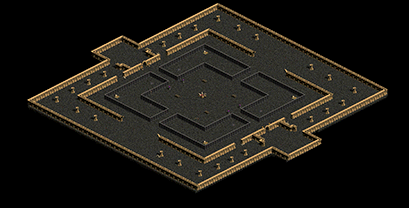

各鯖GvG可能時間一覧
各鯖GvG可能時間一覧
アリーナGvGと比較して、組めるGvの枠数は少ないです。
アリーナGvGでは物資の消費が実質なしに対して、各鯖GvGでは物資が実際に消費されます。
同じ鯖のギルドとのみ対戦可能。
アリーナ鯖と本鯖では一部スキルの挙動が違うこともあります。
GvGは各ギルドにつき1日1回、週3回まで可能。(水曜日6:00リセット)
各日のGvGは朝6時から申し込み可能です。
※画像は土曜日に撮影。
2019.1現在では、200制限GvG、「ミッションブック」の「全プレイヤーに1回殴られる」遂行、ギルドウィークリークエストなどで用いられることが多いです。
各鯖GvG可能時間一覧
| MAPイメージ |

|

|

|

|

|

|  |
|---|---|---|---|---|---|---|---|
| スタート時間 | 廃墟スバイン要塞 | ソゴム山脈 / 赤い丘 | エルベルク山脈 / 岩の谷 | デフヒルズ / 砂漠の遺跡 | バベル大河 / 2粒の涙 | ナダラ平原 / 2つの丘 | ハノブ / 地下決闘場 |
| 10:00 | 10:00 | 10:00 | 10:05 | 10:05 | 10:10 | 10:10 | 10:10 |
| 10:15 | 10:15 | 10:20 | 10:20 | ||||
| 10:40 | 10:40 | 10:40 | 10:45 | 10:45 | 10:50 | 10:50 | 10:50 |
| 10:55 | 10:55 | 11:00 | 11:00 | ||||
| 11:20 | 11:20 | 11:20 | 11:25 | 11:25 | 11:30 | 11:30 | 11:30 |
| 11:35 | 11:35 | 11:40 | 11:40 | ||||
| 12:00 | 12:00 | 12:00 | 12:05 | 12:05 | 12:10 | 12:10 | 12:10 |
| 12:15 | 12:15 | 12:20 | 12:20 | ||||
| 12:40 | 12:40 | 12:40 | 12:45 | 12:45 | 12:50 | 12:50 | 12:50 |
| 12:55 | 12:55 | 13:00 | 13:00 | ||||
| 13:20 | 13:20 | 13:20 | 13:25 | 13:25 | 13:30 | 13:30 | 13:30 |
| 13:35 | 13:35 | 13:40 | 13:40 | ||||
| スタート時間 | 廃墟スバイン要塞 | ソゴム山脈 / 赤い丘 | エルベルク山脈 / 岩の谷 | デフヒルズ / 砂漠の遺跡 | バベル大河 / 2粒の涙 | ナダラ平原 / 2つの丘 | ハノブ / 地下決闘場 |
| 14:00 | 14:00 | 14:00 | 14:05 | 14:05 | 14:10 | 14:10 | 14:10 |
| 14:15 | 14:15 | 14:20 | 14:20 | ||||
| 14:40 | 14:40 | 14:40 | 14:45 | 14:45 | 14:50 | 14:50 | 14:50 |
| 14:55 | 14:55 | 15:00 | 15:00 | ||||
| 15:20 | 15:20 | 15:20 | 15:25 | 15:25 | 15:30 | 15:30 | 15:30 |
| 15:35 | 15:35 | 15:40 | 15:40 | ||||
| 16:00 | 16:00 | 16:00 | 16:05 | 16:05 | 16:10 | 16:10 | 16:10 |
| 16:15 | 16:15 | 16:20 | 16:20 | ||||
| 16:40 | 16:40 | 16:40 | 16:45 | 16:45 | 16:50 | 16:50 | 16:50 |
| 16:55 | 16:55 | 17:00 | 17:00 | ||||
| 17:20 | 17:20 | 17:20 | 17:25 | 17:25 | 17:30 | 17:30 | 17:30 |
| 17:35 | 17:35 | 17:40 | 17:40 | ||||
| MAPイメージ |
|
|
|
|
|
| |
| スタート時間 | 廃墟スバイン要塞 | ソゴム山脈 / 赤い丘 | エルベルク山脈 / 岩の谷 | デフヒルズ / 砂漠の遺跡 | バベル大河 / 2粒の涙 | ナダラ平原 / 2つの丘 | ハノブ / 地下決闘場 |
| 18:00 | 18:00 | 18:00 | 18:05 | 18:05 | 18:10 | 18:10 | 18:10 |
| 18:15 | 18:15 | 18:20 | 18:20 | ||||
| 18:40 | 18:40 | 18:40 | 18:45 | 18:45 | 18:50 | 18:50 | 18:50 |
| 18:55 | 18:55 | 19:00 | 19:00 | ||||
| 19:20 | 19:20 | 19:20 | 19:25 | 19:25 | 19:30 | 19:30 | 19:30 |
| 19:35 | 19:35 | 19:40 | 19:40 | ||||
| 20:00 | 20:00 | 20:00 | 20:05 | 20:05 | 20:10 | 20:10 | 20:10 |
| 20:15 | 20:15 | 20:20 | 20:20 | ||||
| 20:40 | 20:40 | 20:40 | 20:45 | 20:45 | 20:50 | 20:50 | 20:50 |
| 20:55 | 20:55 | 21:00 | 21:00 | ||||
| 21:20 | 21:20 | 21:20 | 21:25 | 21:25 | 21:30 | 21:30 | 21:30 |
| 21:35 | 21:35 | 21:40 | 21:40 | ||||
| MAPイメージ |
|
|
|
|
|
| |
| スタート時間 | 廃墟スバイン要塞 | ソゴム山脈 / 赤い丘 | エルベルク山脈 / 岩の谷 | デフヒルズ / 砂漠の遺跡 | バベル大河 / 2粒の涙 | ナダラ平原 / 2つの丘 | ハノブ / 地下決闘場 |
| 22:00 | 22:00 | 22:00 | 22:05 | 22:05 | 22:10 | 22:10 | 22:10 |
| 22:15 | 22:15 | 22:20 | 22:20 | ||||
| 22:40 | 22:40 | 22:40 | 22:45 | 22:45 | 22:50 | 22:50 | 22:50 |
| 22:55 | 22:55 | 23:00 | 23:00 | ||||
| 23:20 | 23:20 | 23:20 | 23:25 | 23:25 | 23:30 | 23:30 | 23:30 |
| 23:35 | 23:35 | 23:40 | 23:40 | ||||
| 0:00 | 0:00 | 0:00 | 0:05 | 0:05 | 0:10 | 0:10 | 0:10 |
| 0:15 | 0:15 | 0:20 | 0:20 | ||||
| 0:40 | 0:40 | 0:40 | 0:45 | 0:45 | 0:50 | 0:50 | 0:50 |
| 0:55 | 0:55 | 1:00 | 1:00 | ||||
| スタート時間 | 廃墟スバイン要塞 | ソゴム山脈 / 赤い丘 | エルベルク山脈 / 岩の谷 | デフヒルズ / 砂漠の遺跡 | バベル大河 / 2粒の涙 | ナダラ平原 / 2つの丘 | ハノブ / 地下決闘場 |
| MAPイメージ |
|
|
|
|
|
|